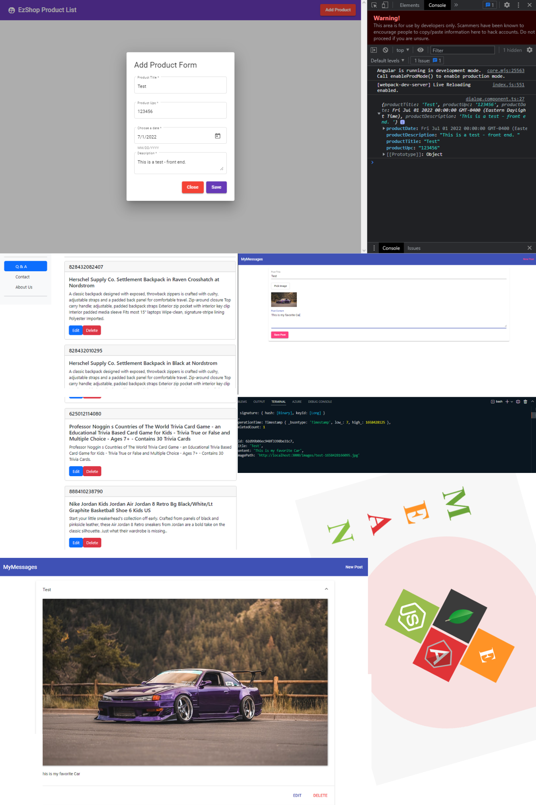
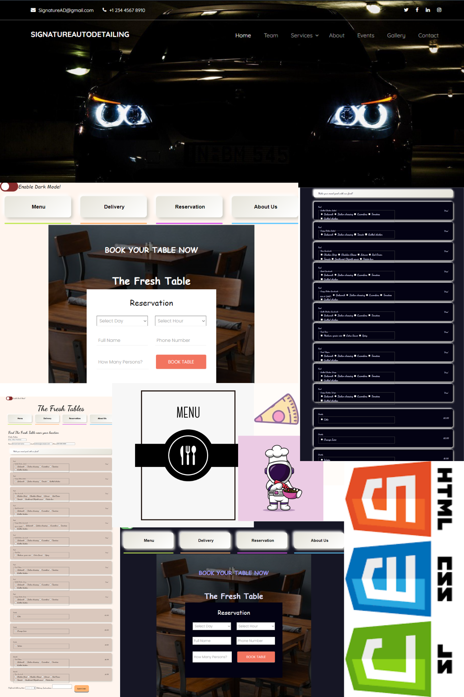
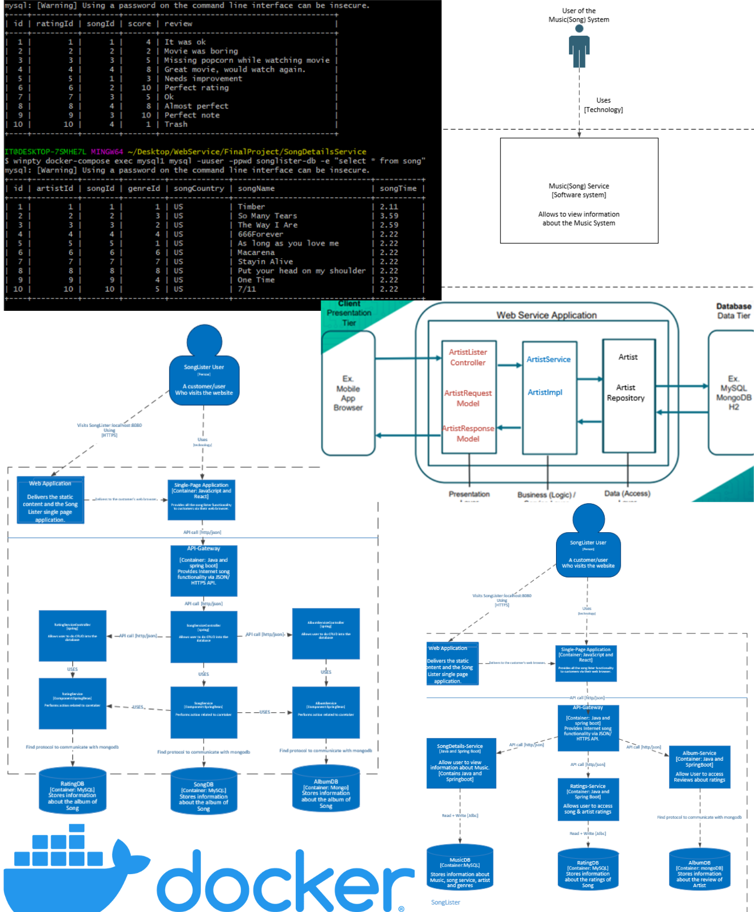
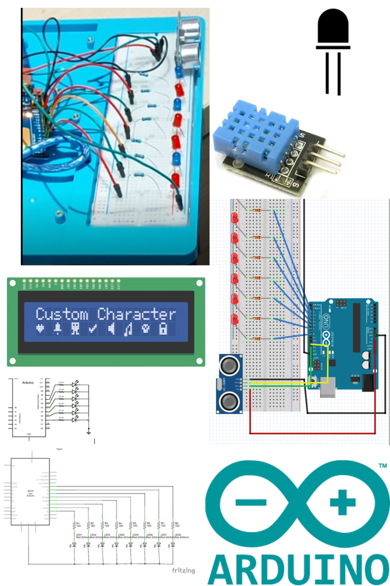
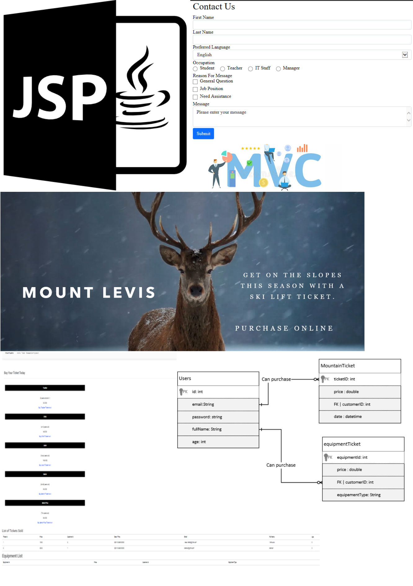
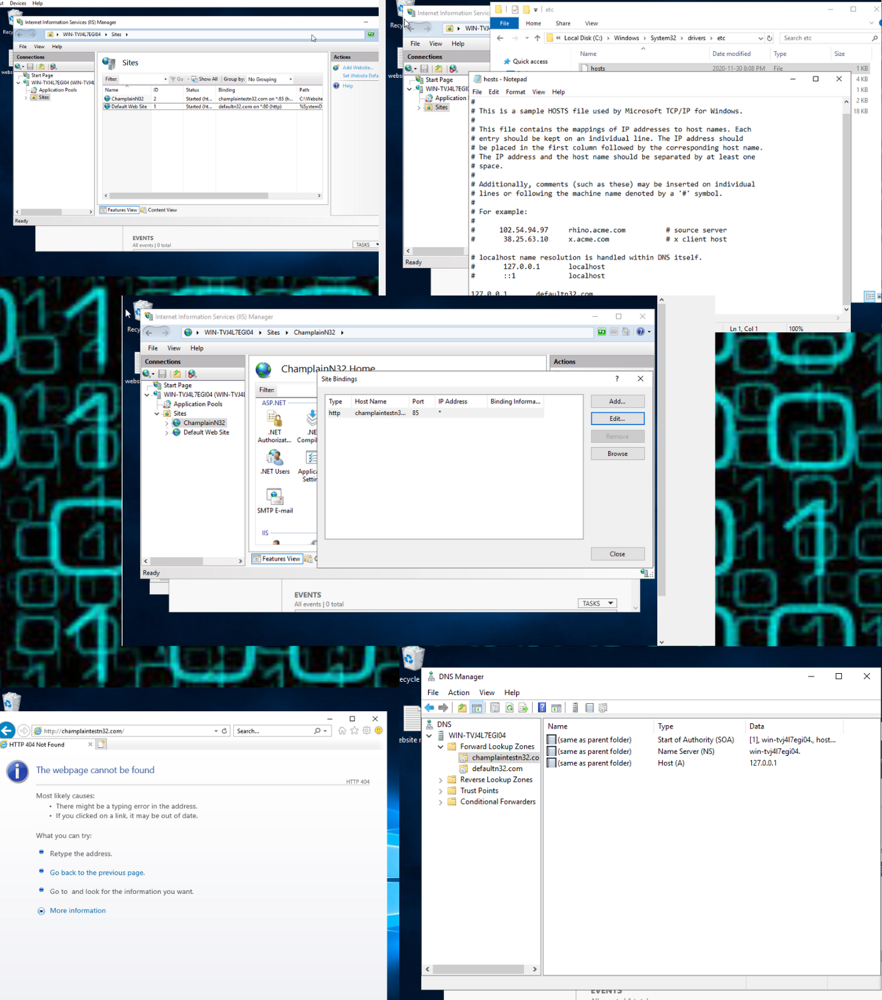

Portfolio
I am currently studying computer science technology at Champlain College in St-Lambert, I am a curious, social and self-driven individual who seeks success in every sphere of his life. For the moment, my desire is to improve my programming skills and develop several projects covering various technologies. I challenge and surpass myself with the goal to exceed the employer’s expectations. I approach and interact with others with ease and facility. I often bring to the table important ideas that lead to beneficial solutions when a problem occurs. I prioritize, listen and include my teammates' ideas in order to achieve desired results. As a team leader I establish the pros and con of a situation to find the preeminent solution. .
Experience
Relevent work experience
- Full Stack Software developper intern at EzShop (Summer 2022)
- Account Payables Technician at Stornoway
- IT Security Clerk Analyst at Parkland Corporation
- Pricing Center Phone Attendant at Parkland Corporation
- Accounting Clerk at Parkland Corporation
Skills
Skills with the most experience
- MEAN Stack (MongoDB, Express, Angular, NodeJS)
- C++, C#, Java, PHP, JavaWeb, HTML, CSS
- Linux Operating System
- MicroServices (Docker, Postman, Gitbash)
- 2D Game developpement using Unity
- Spring Boot & API Calls
- System Analysis and Design
Projects
Mean Stack Project
The images displayed below demonstrate multiple projects I made using MeanStack JavaScript-based framework for developping web applications.
In one of the projects, I was instructed to create an interface (UI) to collect the UPC's from the EzShop database system to facilitate the job of our users and their services .
The other projects shown indicate my personal learning curves with MeanStack, learning the API calls to the server backend, and showing the information on the front end.
Last updated July 2022
Web Sites Front End
During my second year of college, I took the opportunity to bring my knowledge and passion to the next level. Indeed, I created a front end Website for my friend's AutoDetailing company.
The Fresh Table is my first website and the final project I made for my JavaScript class in school. The purpouse of this project was to create a website following the teachers' requirements.
Last updated March 2021
WebServices
As part of my first project at Champlain College in my WebService class, I was advised to build a service of my choice reflecting the teachers' requirements.
Therefore, I decided to make a Song Service which included an Artist & Genre service, an Album service, and a Ratings service. The database used for this project was MySQL and MongoDb
The goal was to make multiple services with a Distributed Architecture which (REST & SOAP) allowed services to make HTTP requests between one another.
This project consisted to be only backend using Docker to package my services into containers and standardized executed components. The software Postman was used to test the CRUD API calls.
Last updated MAY 2022
Arduino
Next, in my Arduino (c++) class, I learned electronics which was helpful to expand my knowledge in regards to programming.
In this course, I had the task of building an innovative project using a basic Arduino starter kit. Consequently, I constructed a code that made LDE lights light up when the Ultrasonic Module would pick up the signal of my hand approaching the sensor. Furthermore, the temperature reader was able to read the temperature level when the sensor was in use.
The project was made in less than 24 hours for my final school project.
Last updated Nov 2021
Java Web-Programming
After having accomplished my basic Java classes, I was given a JSP course at Champlain College. I first thought that this was programming language was outdated.
However, this programming course allowed me to understand MVC and how to properly formulate requests to the TomCat server.
In this project, the greatest challenge was properly understanding the calls to the servers and the functionning of the JSP structure.
After all, this project's objective was to mainly focus on the backend, getting the main features working before implementing more features. This JSP class granted me the opportunity to conceive a excellent database structure which included a Login page and an Account Creation.
Last updated Nov 2021
IT PC PRO
This class was the one I had the most ease with in the Computer Science program. My interest in computer testing and resolving technical issues began at a young age.
Futhermore, the Windows platform had always been the primary platform I worked with. Having VM's allowed me to enjoy Linux programming and learn Kali Linux during my free time.
Last updated May 2020
Interest
Community Involvement
- Soccer